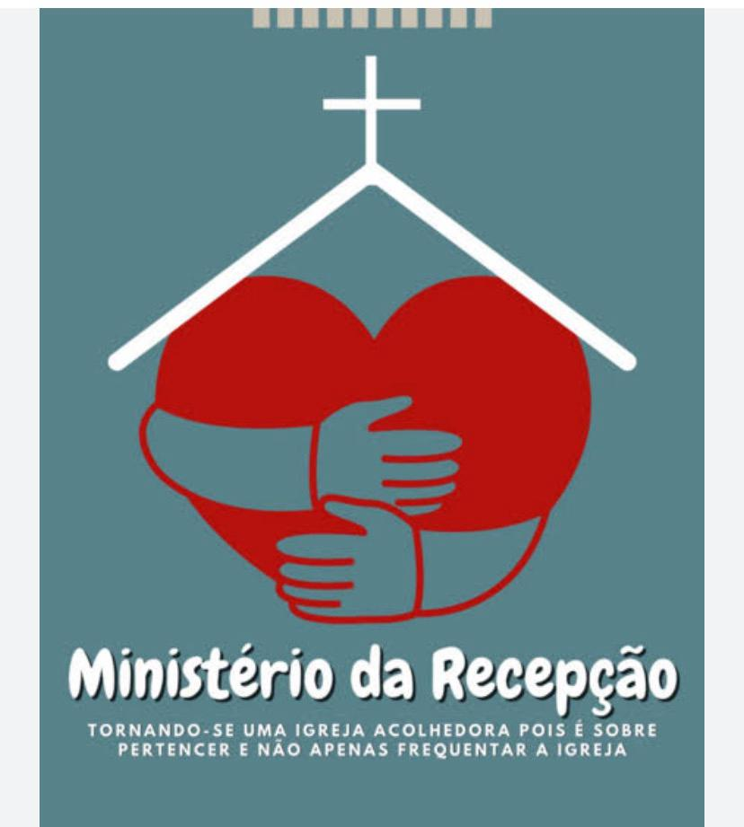

Nossos Ministérios
Encontre um lugar para servir e crescer em comunidade.
Conheça Nossos Ministérios

Ministério Infantil
Líderes: Alex, Libhya, Ingrid e Jackson
Cuidando e ensinando nossas crianças sobre o amor de Deus.
Ministério de Louvor
Líder: Mirian Nascimento
Conduzindo a igreja em adoração através da música.
Ministério de Recepção
Líder: Vanusa
Conduzindo a igreja em adoração através da música.

Ministério de Decoração
Líder: Ester
Conduzindo a igreja em adoração através da música.

Ministério de Casais
Líder: Alan e Ercilia
Conduzindo a igreja em adoração através da música.

Ministério de Sonoplastia
Líder: Rodrigo
Conduzindo a igreja em adoração através da música.

Ministério de Cursos
Líder: Luziene
Conduzindo a igreja em adoração através da música.

Ministério da Juventude
Líder: Ruan e Fernanda
Conduzindo a igreja em adoração através da música.

Ministério de Midia
Líder: Larissa
Conduzindo a igreja em adoração através da música.

Ministério de Sociais
Líder: Larissa
Conduzindo a igreja em adoração através da música.

Ministério de Data Comemorativas
Líder: Jussara Lima
Conduzindo a igreja em datas comemorativas.

Ministério de Dança
Líder: Debora Ramos
Adorando a Deus com expressão e movimento.

Ministério de Teatro
Líderes: Alex e Jackson
Compartilhando a mensagem do Evangelho através da arte dramática.

Ministério de EBD
Líderes: "Jesus"
Compartilhando a mensagem do Evangelho através da arte dramática.

Ministério de Homens
Líder: Delson
Fortalecendo os homens na fé e no papel cristão.

Ministério de Adolescentes
Líderes: Anselmo Nunes e Fatima
Desenvolvendo a fé dos jovens em Cristo e na comunidade.

Ministério de Mulheres
[Líder: Nome da Líder]
Unindo e capacitando mulheres para o propósito de Deus.